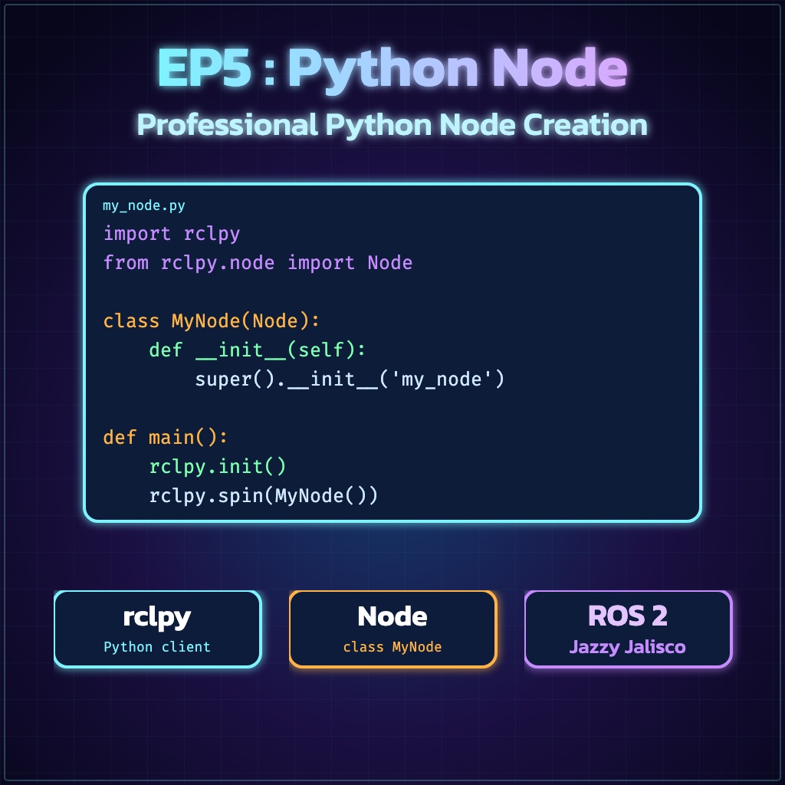
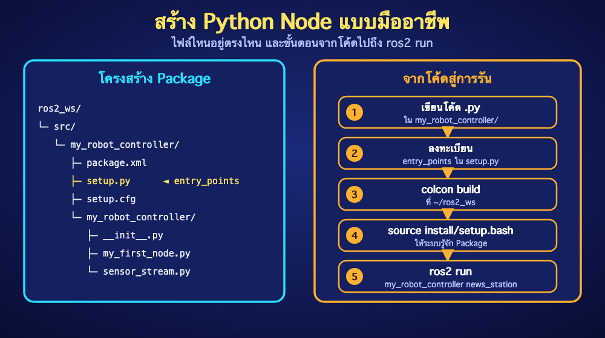

ย้อนกลับ

EP5
Professional Python Node Creation
"ROS 2 Jazzy • Python Node ที่คัดลอกไปใช้งานและตรวจ Syntax ได้จริง"
1. สร้าง Workspace และ Package
source /opt/ros/jazzy/setup.bash
mkdir -p ~/ros2_ws/src
cd ~/ros2_ws/src
ros2 pkg create my_robot_controller \
--build-type ament_python \
--dependencies rclpy std_msgs
ใช้ชื่อ Workspace ~/ros2_ws ให้เหมือนกันทุกบท โครงสร้างสำคัญคือ package.xml, setup.py, setup.cfg และโฟลเดอร์ Python ที่มี __init__.py

2. Publisher: my_first_node.py
import rclpy
from rclpy.node import Node
from std_msgs.msg import String
class NewsStationNode(Node):
def __init__(self):
super().__init__('news_station')
self.publisher_ = self.create_publisher(String, 'robot_news', 10)
self.timer_ = self.create_timer(1.0, self.publish_news)
self.get_logger().info('News Station started')
def publish_news(self):
msg = String()
msg.data = 'Welcome to ROS 2 Jazzy'
self.publisher_.publish(msg)
self.get_logger().info(f'Publishing: {msg.data}')
def main(args=None):
rclpy.init(args=args)
node = NewsStationNode()
try:
rclpy.spin(node)
except KeyboardInterrupt:
pass
finally:
node.destroy_node()
if rclpy.ok():
rclpy.shutdown()
if __name__ == '__main__':
main()
3. Sensor Stream: sensor_stream.py
import rclpy
from rclpy.node import Node
from std_msgs.msg import Int64
class SensorStreamNode(Node):
def __init__(self):
super().__init__('sensor_stream_node')
self.counter = 0
self.publisher_ = self.create_publisher(Int64, 'encoder_ticks', 10)
self.timer_ = self.create_timer(0.5, self.publish_value)
def publish_value(self):
msg = Int64()
msg.data = self.counter
self.publisher_.publish(msg)
self.get_logger().info(f'encoder_ticks={msg.data}')
self.counter += 1
def main(args=None):
rclpy.init(args=args)
node = SensorStreamNode()
try:
rclpy.spin(node)
except KeyboardInterrupt:
node.get_logger().warning('Stopped by user')
finally:
node.destroy_node()
if rclpy.ok():
rclpy.shutdown()
if __name__ == '__main__':
main()
4. ลงทะเบียนใน setup.py
entry_points={
'console_scripts': [
'news_station = my_robot_controller.my_first_node:main',
'sensor_stream = my_robot_controller.sensor_stream:main',
],
},
ชื่อด้านซ้ายคือคำสั่งหลัง ros2 run ส่วนด้านขวาคือ package.module:function และต้องตรงกับชื่อไฟล์จริง
5. ตรวจ Syntax, Build และ Run
cd ~/ros2_ws/src/my_robot_controller
python3 -m py_compile my_robot_controller/my_first_node.py
python3 -m py_compile my_robot_controller/sensor_stream.py
cd ~/ros2_ws
rosdep install --from-paths src --ignore-src -r -y
colcon build --symlink-install --packages-select my_robot_controller
source install/setup.bash
ros2 run my_robot_controller news_station
Terminal ใหม่:
source /opt/ros/jazzy/setup.bash
source ~/ros2_ws/install/setup.bash
ros2 topic echo /robot_news
ros2 topic hz /robot_news
✅ ผ่านบทนี้เมื่อ: ไม่มี SyntaxError, พบ node ใน ros2 node list และ /robot_news ได้ข้อมูลประมาณ 1 Hz